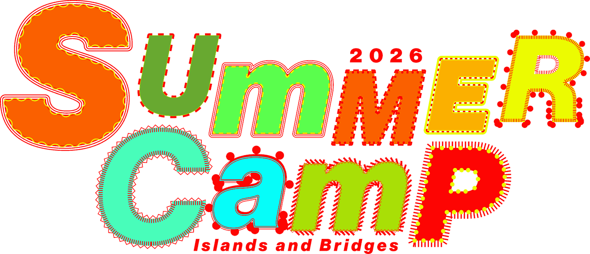

초대의 글
옐로우 펜 클럽의 ‘여름 캠프’는 연중 가장 더운 시기에 펼쳐지는 전시, 나눔, 워크숍, 상영회, 퍼포먼스 등을 아우르는 행사다. 압축된 시간 속에서 연쇄적으로 이어지는 마주침과 그 사이로 스며들어 축적될 감각을 도모한다. 지난 시간 YPC SPACE에 쌓인 대화에서 길어 올린 문제의식, 곧 우리가 놓인 좌표에 충실한 질문으로부터 매해 주제를 정하고, 이미 동료인 이들과 앞으로 동료가 될 이들을 곳곳에서 초대한다. 다양한 분야의 창작자와 연구자가 함께하는 캠프는 볼거리를 늘어놓기보다 함께 머무는 시간을, 과잉 생산보다 주의 깊은 집중을 택하며 지금 이곳에서 예술적 창작과 지식 생산의 조건을 실험한다.
2026년의 주제인 “섬과 바다”는 전 지구적 차원에서 벌어지는 고립과 소외를 마주하는 동시에, 다시 서로 연결될 수 있는 돌봄과 저항의 경로를 꿈꾸려는 열망을 대변한다. 버려진 판자 조각을 모아 만든 계단으로 첨예한 경계를 가볍게 뛰어넘은 두 학교, 해상 봉쇄를 뚫고 고립된 땅을 향해 출항하는 구호선단, 전면적인 검열을 피해 이내 증발할 물로 캐릭터를 그리며 망각에 저항하는 노인, 함께하는 시간과 집중력을 빼앗는 질서를 따돌리기 위해 꾸려진 대안적 모임. 우리는 이러한 움직임에 주목하기로 한다. 서로 다른 상태로 함께 시간을 보내며, 예상치 못한 방식으로 연결되기를 기대하면서.
Between islands, bridges are laid. Over four days, the people and things, sentences and images that have crossed the sea reach one another across Seoul.
Summer Camp 2026 “Islands and Bridges” takes migration and diaspora, translation and voyage, connection and isolation as its threads. From the social history of citrus trees that crossed to Jeju, to a liberatory voyage across the sea, to readings where diaries and notes are spoken aloud, to a temporary broadcasting station transmitting the present of a space in real time — stories scattered like separate islands are joined by the bridge of the program.
The exhibition venues sit like islands across Jung-gu and Jongno in Seoul, while sharings, readings, workshops, screenings, performances, and talks move between them. Visitors are invited to cross the city, land on each island, and walk the bridges laid in between.